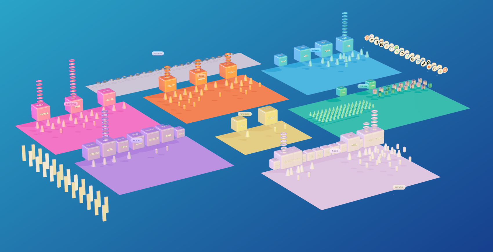

אִימפּרוּב · טירונות סוכנים
אנשים בונים לעצמם
צוות AI שעובד בשבילם.
אני שלהבת ורדי, מייסדת אִימפּרוּב - ואני רוצה להביא את "טירונות סוכנים" לקהילה בארה"ב.
כאן תמצאו מה זה, למי זה עובד, ומה אני מחפשת.
אני שלהבת ורדי, מייסדת אִימפּרוּב - ואני רוצה להביא את "טירונות סוכנים" לקהילה בארה"ב.
כאן תמצאו מה זה, למי זה עובד, ומה אני מחפשת.
אִימפּרוּב היא חברת AI שהקמתי ב-2022.
כיום אני מריצה אופרציה שמצריכה עשרות עובדים - שיווק, מכירות, תוכן, פדגוגיה, שירות לקוחות, תפעול וכספים. הכול רץ, כל יום, גם כשאני ישנה.
את כל העבודה הזאת עושה צוות של סוכני AI שבניתי בעצמי. אין עובד אנושי אחד.
זה צילום מסך מהמערכת האמיתית של צוות ה-AI שלי - משרד ה-AI שלי. כל שטח צבעוני הוא מחלקה שלמה בעסק, וכל קובייה היא סוכן שעושה עבודה של אדם.

אני לא מתכנתת. בדיוק בגלל זה הייתי חייבת לפתח שיטה שמאפשרת גם לאדם לא-טכני לבנות בעצמו כל סוכן שהוא צריך - בלי קוד, בלי להיות תלוי במפתח.
השיטה הזאת עובדת. ואותה בדיוק אני מלמדת בטירונות סוכנים.
תוכנית הכשרה מקיפה, 360 מעלות
בעלי עסקים יוצאים מהתוכנית עם צוות AI שרץ במקומם - ועם השיטה והכלים לבנות כל סוכן, מערכת ותהליך - לבד, בלי להיתקע.
בכל מפגש בונים - על העסק האמיתי של המשתתף, על העבודה שבאמת מעיקה עליו. מי שנכנס עם בעיה יוצא עם מערכת שפותרת אותה.
התוכנית המקורית היא חמישה שבועות. לגרסה בארה"ב אני מתכננת התאמות שיכניסו אותה לכשלושה שבועות - אותה כמות מפגשים בדיוק, מרוכזים, במקום פרוסים על תקופה ארוכה.
והמפגשים הם כ-20% מהתוכנית. 80% הם העבודה עצמה: תרגולים, תרגולי בנייה ושיעורי בית שכל משתתף מיישם על העסק שלו - בהנחיה שלנו ובצורה מובנית, לא "לכו תתאמנו".
מקימים לכל משתתף את סביבת העבודה ובונים איתו את הסוכן הראשון שלו. אף אחד לא מגיע למפגש הראשון עם מסך ריק.
מפגשים אינטנסיביים שבהם בונים יחד. לא הרצאות - עבודה. כל אחד מתקדם על המערכת שלו, עם עזרה צמודה.
בין המפגשים יש תרגולים שלוקחים כל משתתף שלב אחר שלב אל המערכת שלו: עבודה מעמיקה עם Claude Code, והבנה מדורגת של איך בונים סוכן, איך בונים מערכת שלמה, ואיך בונים משרד AI שאפשר להרחיב אותו לאורך זמן.
מפגשי חידוד להתייעצות ולשאלות, וצוות סוכני AI של אִימפּרוּב שזמין לעזרה בכל שלב. מי שנתקע לא מחכה למפגש הבא.
ההקלטות, אתר חומרי הלמידה, וכל מה שנבנה. בלי הגבלת זמן. והכי חשוב - השיטה נשארת, ואיתה היכולת לבנות כל סוכן, מערכת ותהליך אוטומטי שרק תדמיינו. כל בעיה עסקית שעולה - אפשר לבנות לה פתרון מקצה לקצה, בקלות ובמהירות, ופתרון שיעבוד לאורך זמן.
שפת התוכנית: עברית. כל המפגשים, החומרים והליווי מתקיימים בעברית - כך שהיא מתאימה לדוברי עברית בקהילה.
37 תלמידים בנו מערכות AI שחוסכות
25,290,000 ₪בלי לכתוב שורת קוד אחת · שווה ערך ל-101,160 שעות עבודה
כל תוצר כזה גלוי לצפייה בגלריה הפומבית, עם השם של מי שבנה אותו ומה הוא עושה:
gallery.aimprove.co.il
רובם הגיעו בלי שום רקע טכני. ואגב - הם הסכימו שיפנו אליהם ישירות:
bogrim.aimprove.co.il
שלושה פרקים מהפודקאסט שלי, "לומדים AI":
אנשים ששינו את החיים שלהם עם AI - ואיך גם אתם יכולים על התוכנית עצמה, עם דוגמאות אמיתיות של אנשים שעברו אותה ככה בונים עסק שלם עם AI (בלי לשלם משכורות לעובדים) איך נראית אופרציה שלמה שרצה על סוכנים כל האמת על סוכני AI לעסק (במקום עובדים אנושיים) מה סוכן באמת יודע לעשות, ומה לאההשקעה למשתתף: 9,300 ₪ - כ-3,100$ לפי השער היום. זהו אותו מחיר בדיוק שאני גובה בישראל.
תנאי הסף היחיד: מנוי פעיל ל-Claude. זה כלי העבודה לאורך כל התוכנית.
הפירוט המלא: agent-course.aimprove.co.il/faq
אני מתכננת להגיע לארה"ב פיזית ולהעביר את התוכנית שם, ואני מחפשת אנשים מהקהילה שיעזרו לי להרכיב את זה נכון.
ובתמורה לעזרה - אשמח לשריין לכם מקום בתוכנית, ללא עלות.
אם אחד מאלה מדבר אליכם - אשמח שתכתבו לי בוואטסאפ.
לכתוב לי בוואטסאפ